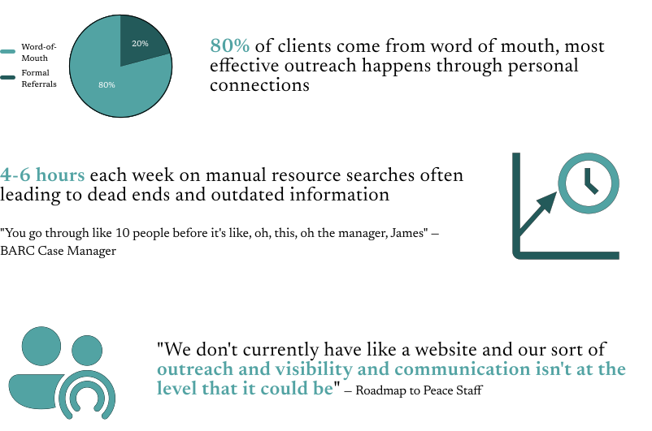
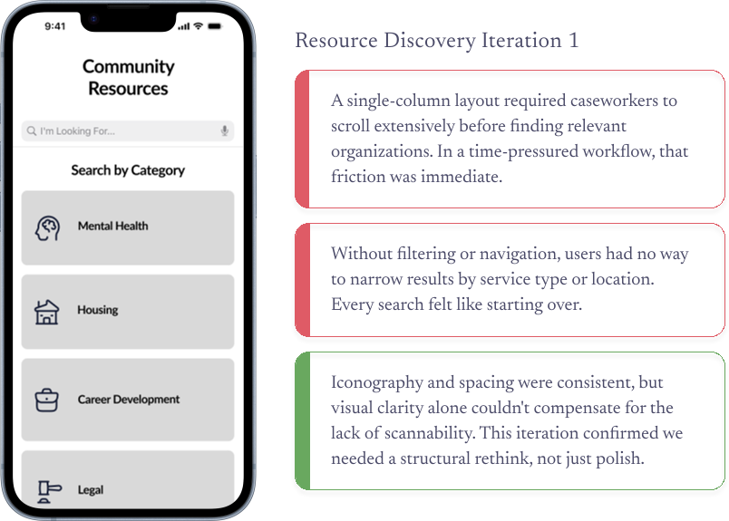
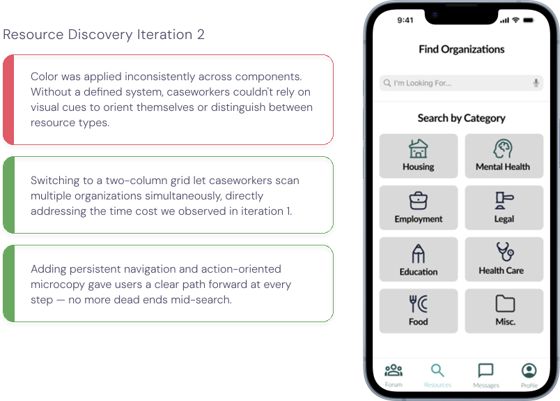
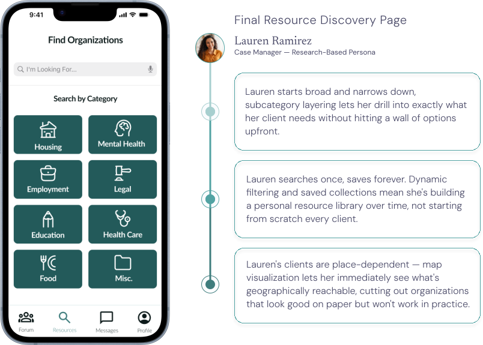
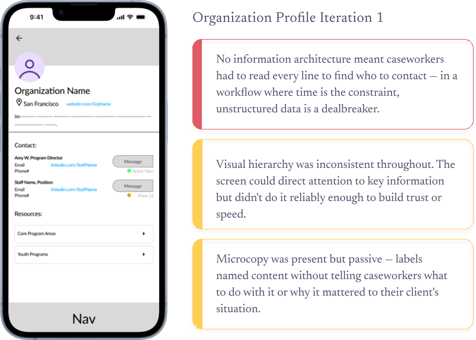
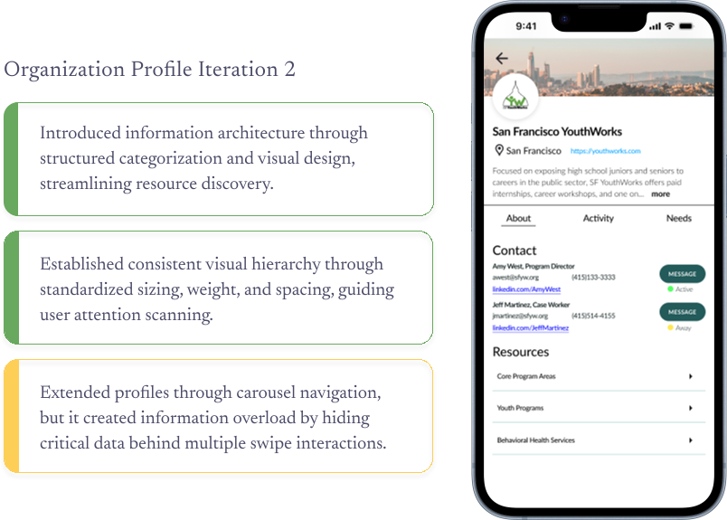

Simplifying Resource Discovery for Caseworkers and Non-profit Organizations with BRIDGEGOOD.

Overview
Amplfy transformed fragmented resource discovery into a centralized, collaborative platform that reduced caseworker search time by 60%, facilitated 500+ new partnerships, and expanded services to 135,000+ system-impacted youth.
Company
BRIDGEGOOD
Collaborators
Juliana Tisker, Allison Chen,
and Robert Ramirez
Timeline
1 Month
Industry
Non-profit
Role
UX Design Apprentice
Responsibilities
Product Management, Usability
testing, Research, UX Metrics
Centralizing discovery, mirroring caseworkers workflow, and making partnerships findable
My design objectives were to reduce the time caseworkers spent searching for resources, make organizational partnerships easier to discover and initiate, and create a platform that reflected how caseworkers actually work — through relationships, not directories. I framed two strategic questions that shaped how I approached the problem:
HMW streamline resource discovery to reduce caseworker search time and increase partnership engagement?
HMW design a social network that encourages ongoing collaboration between organizations?
User Research
Understanding Resource Discovery Workflows, Partnership Challenges, and Collaboration Pain Points
To understand how caseworkers discover resources and build partnerships, I conducted moderated interviews and contextual inquiry with 12 participants across 4 Bay Area organizations.

Research Takeaway
Caseworkers Rely on Informal Networks Over Institutional Systems
Resource discovery concentrated around word-of-mouth referrals (80%) rather than formal platforms, with caseworkers spending 4-6 hours weekly navigating fragmented sources. I addressed this by designing a centralized platform that prioritized relationship-building features, peer recommendations, direct messaging to decision-makers, and transparent partnership visibility, that mirrored how caseworkers already worked while reducing search friction and enabling scalable collaboration.
Problem 1: Resource Discovery
Designing for Discovery: How I turned that insight into a searchable, filterable resource platform
Design a resource page that allows for efficient, direct discovery of organizations to partner or connect a youth client with.



Problem 2: Organization Profile
Designing for Connection: Building the social layer that made partnerships feel like relationships
Design a profile page that displays the organization mission and activity, while facilitating quick messaging and connection within the app.



Final Design
Conclusions
Amplfy reduced caseworker search time by 60%, facilitated 500+ new organizational partnerships, and expanded services to 135,000+ system-impacted youth. By mirroring how caseworkers actually work — through relationships and trust rather than formal directories — the platform created direct pathways to decision-makers that scaled without sacrificing the human element.
The most important finding came from research: I expected formal referral systems to dominate, but 80% of connections came from word-of-mouth, fundamentally shifting the entire design direction. That taught me that assumptions about users, even well-intentioned ones, are no substitute for listening. Synthesizing conflicting priorities like rapid growth versus infrastructure gaps, or scalable systems versus authentic relationships, into decisions that served everyone required a level of empathy I hadn't been asked to apply before.
Designing for caseworkers whose daily work directly impacts vulnerable youth made one thing clear: when you're building for communities that have been overlooked, listening isn't just a research method — it's the most critical design skill you have.